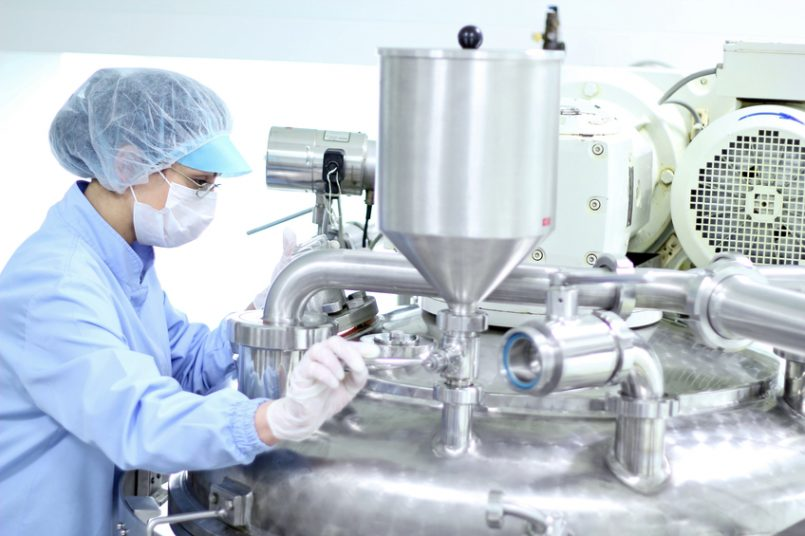
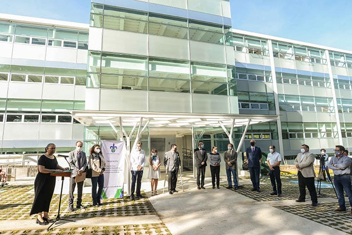
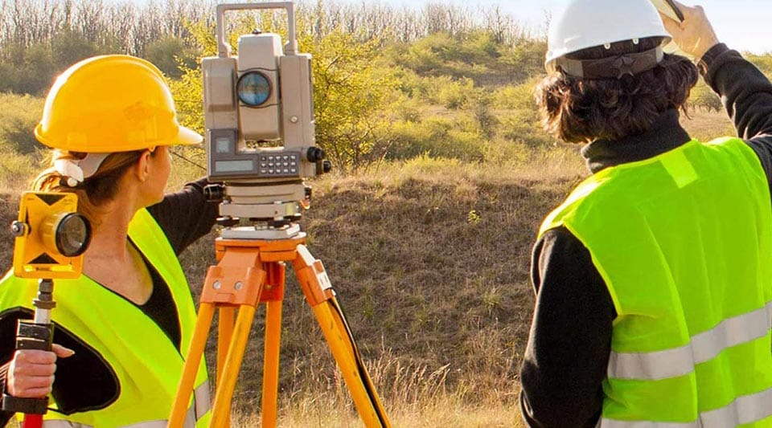
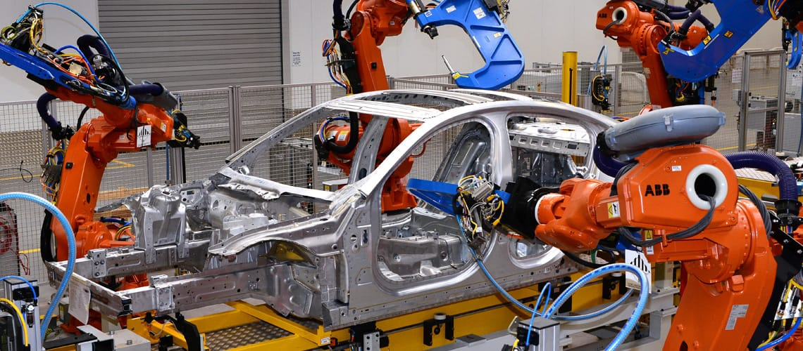
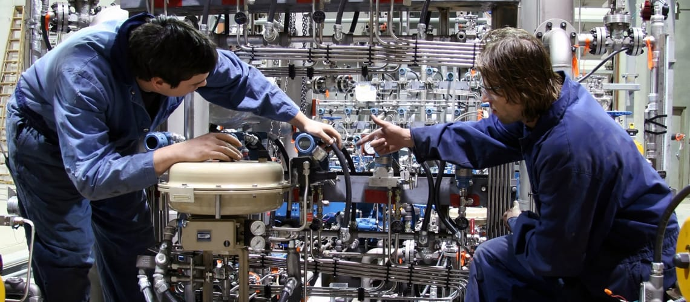
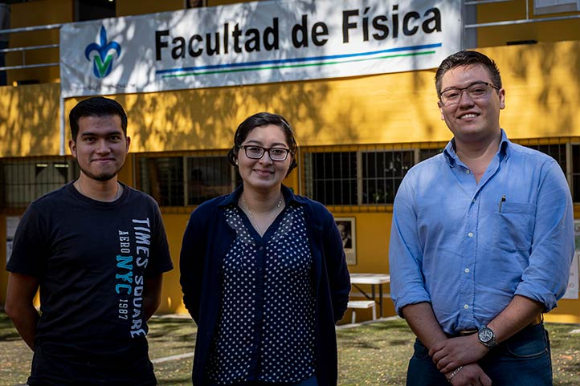
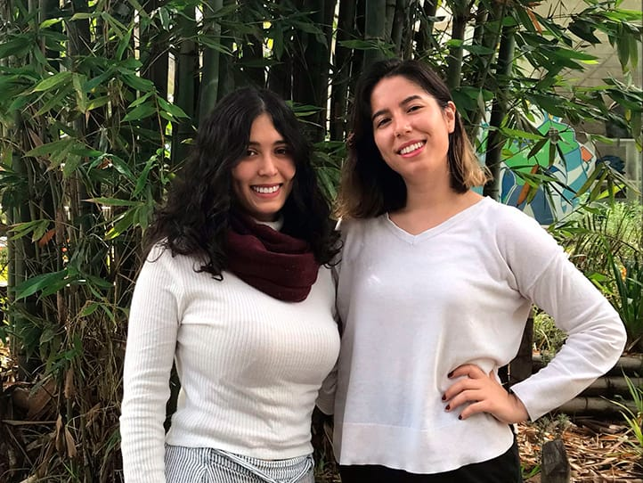
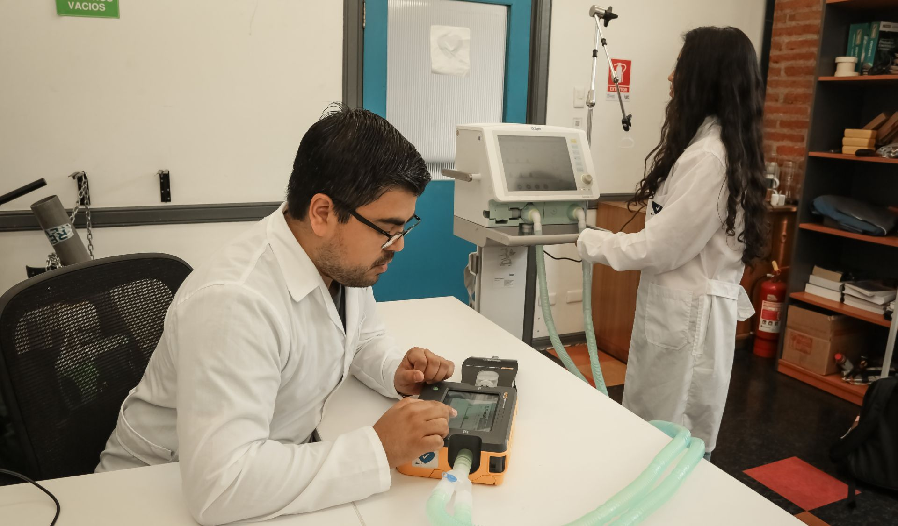
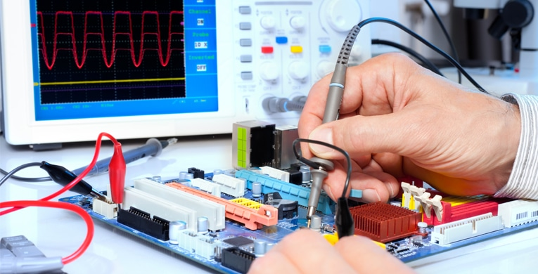

-
Quimico farmacéutico Biologo
Formar Químicos Farmacéuticos Biólogos con un perfil integral y con dominio en fenómenos químicos, farmacéuticos y biomédicos, integrando conocimientos teórico-prácticos y el manejo de instrumentos y equipo rutinario y especializado, orientados al aprendizaje permanente, con calidad humana y socialmente responsables, con el propósito de aplicar el conocimiento en problemas sociales como el diagnóstico clínico y prevención de enfermedades emergentes y reemergentes, disponibilidad de nuevas formas farmacéuticas, disponibilidad de principios activos para la elaboración de medicamentos, uso adecuado y racional de medicamentos, detección de reacciones adversas; en la protección del medio ambiente y en servicios profesionales actualizados y de calidad.
1.Facultad de Ciencias Químicas, Orizaba Visita su portal web Daniel Guzmán Gómez
daguzman@uv.mx
Facultad de Química Farmacéutica Biológica, Xalapa
-
Quimico industrial
Formar profesionistas de la Química a través de un plan de estudios integral y flexible con los conocimientos científicos y tecnológicos necesarios, para analizar y proponer soluciones creativas e innovadoras a los retos que enfrenta la sociedad en un entorno competitivo, globalizado y de compromiso con el cuidado al medio ambiente.
2.Facultad de Ciencias Químicas, Orizaba

-
Matematicas
Formar profesionistas de las matemáticas, mediante un modelo educativo integral y flexible, con una sólida preparación en la disciplina, que le permita abordar problemas de la ciencia, la técnica y la sociedad, con espíritu crítico, tolerancia, trasparencia, honestidad, honradez, ética profesional, creatividad, responsabilidad, compromiso social, respeto, equidad y aprendizaje de por vida.
3.Facultad de Matemáticas, Xalapa

-
Ingeniería topografica geodesica
Formar profesionales con un perfil integral, competentes en el ámbito de la Ingeniería Topográfica Geodésica, orientados al aprendizaje permanente, con calidad humana y socialmente responsables. Capaces de atender las muy diversas problemáticas que inciden en la Ingeniería Topográfica Geodésica, y capaces de participar en la solución de problemas de infraestructura rural, urbana e industrial para el desarrollo socioeconómico de los centros de población.
4.Facultad de Ingeniería de la Construcción y el Hábitat, Boca del Río

-
ingeniería quimica
Formar profesionistas en el área de Ingeniería Química, con un perfil integral y con dominio en procesos que involucran cambios físicos, químicos y biológicos. Orientados al aprendizaje permanente, con calidad humana y socialmente responsables, con el propósito de aplicar el conocimiento para la resolución de problemas en procesos en los que la materia y la energía son transformadas para beneficio de los sectores productivos, de servicios y sociales.
5.Facultad de Ciencias Químicas, Xalapa
-
ingeniería petrolera
Formar profesionistas en Ingeniería Petrolera con un perfil integral y con dominio en la exploración y explotación de recursos energéticos naturales, orientados al aprendizaje permanente, con calidad humana y socialmente responsables, con el propósito de aplicar el conocimiento en problemas sociales como suministro de hidrocarburos para el desarrollo industrial, doméstico y de la sociedad en general.
6.Facultad de Ciencias Químicas, Poza Rica Escolarizada
Facultad de Ciencias Químicas, Coatzacoalcos Escolarizada Visita su portal web Leticia valencia Argüelles
Facultad de Ciencias Químicas, Poza Rica
-
ingeniería Naval
Formar profesionistas en Ingeniería Naval con un perfil integral y con dominio en diseño, construcción, reparación, inspección y mantenimiento de todo tipo de buques, boyas, plataformas y todo tipo de artefactos marinos, orientados al aprendizaje permanente, con calidad humana y socialmente responsables, con el propósito de aplicar el conocimiento en problemas sociales como desarrollo de la industria comercial, petrolera y pesquera.
7.Facultad de Ingeniería Mecánica y Ciencias Navales, Boca del Río
-
ingeniería metalúrgica y ciencias de los materiales
Formar ingenieros en metalurgia y ciencias de los materiales que puedan desempeñarse eficientemente en el sector productivo y contribuir en el desarrollo regional, nacional e internacional, con conocimientos disciplinares actuales, capacidad innovadora y valores, para satisfacer la demanda creciente de recursos humanos especializados en el área de ingeniería metalúrgica y ciencias de los materiales.
8.Facultad de Ciencias Químicas, Boca del Río

-
ingeniería mecatronica
Formar ingenieros en mecatrónica con alta capacidad tecnológica, espíritu emprendedor y sólidas bases humanistas, para innovar, diseñar, organizar, operar, controlar y mejorar procesos, productos que apoyen la generación de conocimiento científico y tecnológico con el fin de brindar bienes o servicios que contribuyan al desarrollo sustentable de la sociedad.
9.Facultad de Ingeniería Mecánica y Eléctrica, Ixtaczoquitlán Visita su portal web José Luis Oviedo Barriga
Facultad de Ingeniería Eléctrica y Electrónica, Boca del Río

-
ingenieria mecanica electrica
Formar profesionistas en Ingeniería Mecánica Eléctrica con un perfil integral de calidad y aprendizaje permanente para diseñar, construir, instalar, operar, mantener y controlar máquinas, elementos electromecánicos, neumáticos, hidráulicos, subestaciones eléctricas, plantas generadoras, instalaciones mecánicas y eléctricas, así como sistemas de transmisión y distribución, capaces de resolver problemas y atender necesidades sociales, desarrollar e innovar nuevos procesos y tecnologías en la industria metalmecánica y de generación de energía eléctrica con responsabilidad social.
10.Facultad de Ingeniería, Coatzacoalcos Visita su portal web Guillermo Miguel Martínez Rodríguez
guillmartinez@uv.mx
Fernando Chavarría Domínguez
fchavarria@uv.mx
Facultad de Ingeniería Mecánica Eléctrica, Ixtaczoquitlán Visita su portal web Liliana Ramírez Rosales
lilramirez@uv.mx
Facultad de Ingeniería Mecánica Eléctrica, Poza Rica Visita su portal web Juan Rodrigo Laguna Camacho
jlaguna@uv.mx
Gabriel Juárez Morales
gjuarez@uv.mx
Facultad de Ingeniería Mecánica y Ciencias Navales, Boca del Río Visita su portal web Francisco Ortiz Martínez
franortiz@uv.mx
Facultad de Ingeniería Mecánica y Eléctrica, Xalapa

-
arquitectura
Formar arquitectos de manera integral (intelectual, profesional, social y humana), con conocimientos, habilidades, destrezas y actitudes para proyectar, diseñar y construir soluciones arquitectónicas con perspectivas sostenibles, que respondan y atiendan necesidades del entorno cultural, social, económico a nivel regional, nacional e internacional. Lo anterior con una actitud de compromiso y responsabilidad en la práctica profesional, y constante búsqueda de innovación tecnológica para mejorar la calidad de vida de los usuarios.
11: Ingeniería Informática
Facultad de Ingeniería Eléctrica y Electrónica,
Boca del Río

-
ciencias atmosfericas
Formar profesionistas altamente competitivos para el trabajo en las áreas de la investigación científica y la meteorología operativa, tanto en el sector público como en el privado y en el social. La formación profesional estará basada en un conjunto articulado de saberes teóricos, heurísticos y axiológicos, sustentados por un análisis objetivo de necesidades sociales.
12: Ingeniería Industrial
Facultad de Ingeniería, Ixtaczoquitlán Visita su portal web Luz del Carmen Shroeder Rodríguez
Facultad de Ingeniería Mecánica y Eléctrica, Poza Rica Visita su portal web Gabriel Juárez Morales
Facultad de Ingeniería Mecánica y Ciencias Navales, Boca del Río

-
fisica
Formar recursos humanos en el campo de la Física con las competencias necesarias para aplicar sus conocimientos y habilidades para entender y dar solución, eficaz y eficientemente, a los problemas y necesidades que le presenten la ciencia, la academia, la sociedad, la industria y la empresa, tanto a nivel regional y nacional como a nivel global; con una actitud crítica, humanista y solidaria y con una visión de respeto al medio ambiente, desde una perspectiva sistémica, con una percepción compleja de la realidad, desarrollando sus funciones de docencia, investigación, difusión y creación de la cultura y extensión de los servicios, con responsabilidad social, compromiso con la transparencia y la rendición de cuentas, para contribuir al logro de una sociedad más productiva, justa y segura.
13: Ingeniería en tecnologías computacionales
Facultad de Ingeniería en Electrónica y Comunicaciones, Poza Rica

-
Ingeniería ambiental
Formar ingenieros ambientales capaces de diagnosticar, evaluar, diseñar, proponer, ejecutar soluciones y gestionar estrategias para la minimización de impactos ambientales, organizar y coordinar equipos de trabajo multidisciplinarios.
14: ingeniería en instrumentación electrónica
Facultad de Instrumentación Electrónica, Xalapa

-
ingenieria biomedica
Formar Ingenieros que utilizan sistemas biológicos para el diseño y elaboración de nuevos productos, mejoramiento de las especies o desarrollo de microorganismos con usos específicos y aplicaciones en las distintas ramas de la ingeniería, con capacidad para innovar, diseñar, organizar, operar, controlar y mejorar procesos y productos con características biológicas, que se encuentren enfocados al beneficio del ser humano y el ambiente.
15: Ingeniería electronica y comunicaciones
Facultad de Ingeniería en Electrónica y Comunicaciones, Poza Rica
Facultad de Ingeniería Eléctrica y Electrónica, Boca del Río

-
Ingeniería civil
Formar profesionistas en Ingeniería Civil con un perfil integral y dominio en matemáticas, física, ciencias de la ingeniería afines y ciencias sociales pertinentes, orientados al aprendizaje permanente, con calidad humana y socialmente responsables, con el propósito de aplicar el conocimiento en atender problemas sociales mediante la concepción, el diseño, la construcción y la operación de infraestructura necesaria para el desarrollo de la civilización humana.
16: Ingeniería en Biotecnología
Facultad de Ciencias Químicas, Coatzacoalcos
Facultad de Ciencias Químicas, Orizaba
-
Ingeniería en alimentos
Formar recursos humanos de calidad, que posean una educación integral y flexible con alta capacidad tecnológica, espíritu emprendedor y bases humanísticas, capaces de diseñar procesos productivos de la industria alimentaria; gestionar la calidad mediante el análisis y control estadístico de los sistemas de calidad, seguridad e inocuidad alimentaria; comunicar de forma oral y escrita conocimientos científico-técnicos en diferentes idiomas; autoaprender tanto conocimientos como tecnología de vanguardia; e innovar nuevos productos y procesos con iniciativa, imaginación, apertura, creatividad, ética y responsabilidad social para satisfacer las necesidades sociales e industriales.
17: Ingeniería en alimentos
Facultad de Ciencias Químicas, Orizaba
Facultad de Ciencias Químicas, Xalapa
-
Ingeniería en biotecnología
Formar Ingenieros que utilizan sistemas biológicos para el diseño y elaboración de nuevos productos, mejoramiento de las especies o desarrollo de microorganismos con usos específicos y aplicaciones en las distintas ramas de la ingeniería, con capacidad para innovar, diseñar, organizar, operar, controlar y mejorar procesos y productos con características biológicas, que se encuentren enfocados al beneficio del ser humano y el ambiente.
18: Ingeniería Civil
Facultad de Ingeniería, Coatzacoalcos
Facultad de Ingeniería, Ixtaczoquitlán
Facultad de Ingeniería Civil, Poza Rica Visita su portal web Armando Aguilar
Facultad de Ingeniería de la Construcción y el Hábitat, Veracruz
Facultad de Ingeniería Civil, Xalapa
-
ingeniería en electronica y comunicaciones
Formar ingenieros con alto dominio en las aéreas de la electrónica, computación, sistemas de comunicación y control, representativos del sustento teórico de la disciplina, competentes para el desarrollo científico y tecnológico, promotores del mejoramiento de las condiciones de su entorno a través del ejercicio de su profesión.
19: Ingeniería biomédica
Facultad de Instrumentación Electrónica, Xalapa
-
Ingenieria en instrumentacion electronica
Formar profesionistas capaces de emplear conocimientos en sistemas de instrumentación electrónica, para proyectar, diseñar, analizar y mantener sistemas y equipos electrónicos de medición, control y automatización, con un perfil integral, orientados al aprendizaje permanente, con calidad humana y socialmente responsables, con el propósito de que atiendan los problemas sociales del entorno.
20: Ingeniería ambiental
Facultad de Ciencias Químicas, Coatzacoalcos
Facultad de Ciencias Químicas, Orizaba
Facultad de Ciencias Químicas, Poza Rica
Facultad de Ciencias Químicas, Boca del Río
Facultad de Ciencias Químicas, Xalapa
